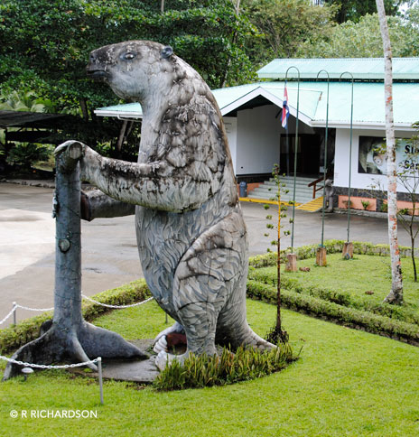

Megatherium

Salvador, a life-size replica of the extinct Giant Ground Sloth, greets visitors entering the Sloth Sanctuary.Paleontologists have identified an amazing variety of fossils of at least 23 different kinds and sizes of prehistoric sloths. The largest and grandest of these was the Megatherium, the extinct genus of the family Bradypodidae. This giant stood seven meters tall and weighed seven tons. Megatherium (“giant beast” in Latin) lived from about 35 million to 11,000 years ago, coinciding with the last Ice Age.
Theories abound in the scientific world about the disappearance of these creatures. Among them is the suggestion that fast changes of climate killed them, or that human hunters that had crossed into Alaska killed them for food as they moved throughout North America.
Another theory hypothesizes that these southern sloths had lived on an island that held few carnivores for thousands of years. During the Great American Interchange, northern animals learned to watch out for carnivores that traveled south at the same time they did. The southern herbivores had not learned to be cautious as they traveled north. Many of them may have been eaten by their new neighbors.
Yet another theory suggests that disease terminated these giants of the Americas. Little evidence available causes these gaps in our knowledge about the Giant Ground Sloth.
Megalonyx
Megalonyx (“great claw”) is the Greek name for another of the giant ground sloths. The name was proposed by Thomas Jefferson in 1797, based on fossil specimens found in a cave in West Virginia. Megalonyx jeffersonii, of the family Megalonychidae, was a large, heavily built animal about 8 to 10 feet (2.5–3 m) long. Its maximum weight may have been as much as 800 pounds. This is medium-sized among the giant ground sloths.
Like other ground sloths it had a blunt snout, massive jaw nd large, peg-like teeth. The hind limbs were plantigrade (flat-footed) and this, along with its stout tail, allowed it to rear up into a semi-erect position to feed on tree leaves. The forelimbs had three highly developed claws that were probably used to strip leaves and tear off branches.
M. jeffersonii was apparently the most wide-ranging giant ground sloth. Fossils are known from many Pleistocene sites in the United States, including most of the states east of the Rocky Mountains as well as along the west coast. It was the only ground sloth to range as far north as the present-day Yukon and Alaska.
In 2010, the first specimen ever found in Colorado was discovered at the Ziegler Reservoir site near Snowmass Village (in the Rocky Mountains at an elevation of 8,874 feet). Why the Giant Ground Sloth, as with other megafauna of the Miocene epoch, grew to such enormous size is a mystery.
Besides their bulk, these sloths were distinguished by their significantly longer front than hind legs, a clue that they used their long front claws to rope in copious amounts of vegetation. As big as it was, though, Megalonyx was a mere pup compared to the truly giant Megatherium.